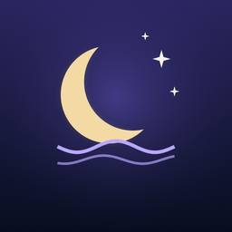

Privacy Policy
ASMR DREAMS Automation · Last updated: 21 November 2026
1. Who we are
"ASMR DREAMS Automation" (the "Application") is a private tool operated by the owner of the YouTube channel ASMR DREAMS. It publishes the channel's own original videos. It is not offered to the public and is used only by the channel owner.
2. Data the Application accesses
When the channel owner authorizes it with Google OAuth, the Application uses the YouTube API Services to:
- upload videos, thumbnails and their titles, descriptions and tags to the owner's channel and schedule their publication (scope
youtube.upload); - create and update the channel's playlists, apply channel branding and read the processing and privacy status of the channel's own videos (scope
youtube); - read aggregated statistics of the channel's own videos, such as views, likes and watch time (scope
yt-analytics.readonly).
The Application does not access any other YouTube account, does not read comments or messages, and does not collect personal information about viewers.
3. How data is used and stored
Data obtained through the YouTube API Services is used only to publish and schedule the channel's videos, to verify that publications succeeded and to measure which videos perform best in order to improve future videos. The OAuth token and the statistics are stored on infrastructure controlled by the channel owner. They are never sold, shared with third parties or used for advertising.
4. Retention and deletion
Statistics are kept for as long as the channel is operated. Access can be revoked at any time from Google Account → Third-party connections (also available at security.google.com/settings/security/permissions). Revoking access stops all use of the YouTube API Services by the Application; locally stored data is then deleted on request.
5. YouTube and Google policies
The Application uses YouTube API Services. By using it, you agree to be bound by the YouTube Terms of Service. Google's handling of data is described in the Google Privacy Policy. The Application's use of information received from Google APIs adheres to the Google API Services User Data Policy, including the Limited Use requirements.
6. Contact
For any question about this policy, contact the channel owner through the ASMR DREAMS YouTube channel.
Règles de confidentialité (français)
« ASMR DREAMS Automation » est un outil privé, utilisé uniquement par le propriétaire de la chaîne YouTube ASMR DREAMS pour publier ses propres vidéos originales.
Avec l'autorisation OAuth de Google donnée par le propriétaire, l'outil utilise les services d'API YouTube pour : envoyer et programmer les vidéos, les miniatures et leurs métadonnées ; gérer les playlists et l'habillage de la chaîne ; lire l'état et les statistiques agrégées des vidéos de la chaîne (vues, mentions J'aime, durée de visionnage). Aucune donnée personnelle de spectateur n'est collectée, aucun autre compte n'est consulté.
Ces données servent uniquement à publier les vidéos, à vérifier leur publication et à améliorer les vidéos futures. Elles sont conservées sur une infrastructure contrôlée par le propriétaire de la chaîne, ne sont jamais vendues ni partagées, et ne servent pas à la publicité. L'accès peut être révoqué à tout moment depuis Compte Google → Connexions tierces.
L'outil utilise les services d'API YouTube ; leur utilisation implique l'acceptation des Conditions d'utilisation de YouTube. Voir aussi les Règles de confidentialité de Google et les règles relatives aux données des services d'API Google (exigences d'usage limité). Contact : via la chaîne YouTube ASMR DREAMS.